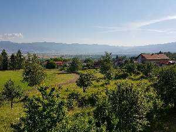
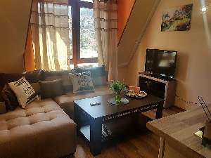
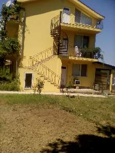
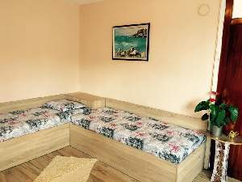
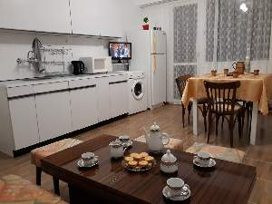
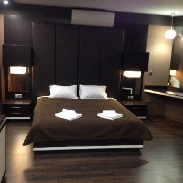

|  | Апартаменти Гювийски са част от фамилна къща с двор в спокоен квартал на края на града. Общата леглова база варира от 8 до 12 места, като апартаментите са 2 типа - стандартен и семеен. Стандартните апартаменти са два, като всеки се състои от просторна спалня, хол с голям разтегаем диван, баня с тоалетна, тераса с прекрасен панорамен изглед към долината. Семейният апартамент има две просторни спални, баня с тоалетна и тераса с красив изглед към планината. Всеки апартамент е подходящ за от 2 до 4 човека. | ||
|  | Апартаменти Диди се намират в центъра на град Девин на 150 метра от аквапарк Персенк и на 50 метра от хотел SPA Девин. Предлагаме общо три апартамента, подходящи за: * Апартаменти 1 и 2 - подходящи за настаняване на 4 човека всеки. Имат една спалня, хол с удобен разтегаем диван, трапезария, кухня и баня. * Апартамент 3 - студио за двама човека със собствен санитарен възел, но без кухня. Във всеки от апартаментите има телевизор с кабелна телевизия и безжичен интернет. В близост има безплатен паркинг. Срещу допълнително заплащане се предлага закуска в ресторант Краси, ползване на SPA център в SPA хотел Девин. В района има много забележителности, еко пътеки, язовир Цанков камък, Ягодинската пещера, орлово око, Триградското ждрело, Широка лъка, Пампорово. Може да разпуснете с риболов на Цанков камък, конна езда и басейни които работят целогодишно. Заповядайте! | ||
|  | Вилата е разположена в покрайнините на Синеморец,предлага на гостите си уют и спокойствие сред изумителната природа на Странджа планина. Разполага 3 едностайни апартамента, двата апартамента са на третия етаж (мансардни) и от 2 рия до 3 тия етаж има вито стълбище. Гледката на апартаментите е към живописната Странджа планина. Апартаментите разполагат със спалня и кухня в която има разтегателен диван. Започнете деня си с чаша кафе под разлистената лоза и се пригответе за слънце и морски бриз на един от четирите плажа в района на Синеморец! За любителите на риболов устието на река Велека е на 2 км. Заповядайте! | ||
|  | Хубав български уютен апартамент в центъра на гр. Малко Търново. Местоположението е перфектно, на 500 м. от културно историческият център. Апартаментът разполага с всичко за един нормален престой с удобствата които ще Ви трябват. . Предлага спалня, хол, кухня, баня и тераса. Оборудван с климатик, хладилник, микровълнова, телевизори, скара. Идеално и за семейства с деца. . Добра отправна точка до тракийски древни светилища и природни забележителности. | ||
|  | Почувствайте магията на Еленския балкан във функционално обзаведен и оборудван апартамент за настаняване за 2 до 4 човека, осигуряващ всички удобства и уют, които ще ви накарат да почувствате жилището като свое. Разположен е на тиха и спокойна улица на пет минути пеша от центъра на града. Апартаментът се намира на втори етаж от жилищен блок и е с южно изложение, което осигурява много светлина и топлина. Жилището е двустайно и се състои от спалня, огромен дневен тракт с обособени симпатична кухня, удобна трапезария и хол с мека мебел за сън и почивка, баня с тоалетна и антре с вграден гардероб. Отоплението е с радиатор и конвектор или с камина на дърва, която допълнително придава домашен уют. Кухнята е оборудвана с необходимите електроуреди, прибори, съдове и кухненски аксесоари за приготвяне и сервиране на храна. Разполага с Wi-Fi интернет и кабелна TV. Седем метровата тераса с прекрасен изглед е с обособен кът за барбекю на дървени въглища за ценителите на вкусната храна, както и с масичка и столове за кафе почивка на чист въздух. Предоставени са ютия и дъска за гладене, комплект хавлии, сешоар, чехли и тоалетни принадлежности. Осигуряваме две паркоместа. Подходящ е за самостоятелни двойки, за семейства или групи приятели. Възможност за ранно настаняване. | ||
|  | Апартамент Маунтин Дриймс се изчерпва бързо на нашия сайт. Разположен в центъра на Сапарева баня, апартамент Mountain Dreams разполага с безплатен Wi-Fi интернет, климатик и съвременен интериор. Предлага гледка към планината. Апартамент Mountain Dreams притежава също напълно оборудван кухненски бокс с кът за хранене и има дървени подове и канапе в дневната. Самостоятелната баня е с душ, сешоар и безплатни тоалетни принадлежности. В близкия район лесно можете да намерите ресторанти, барове и кафенета за закуска,обяд и вечеря. Естествените горещи минерални извори се намират на 300 метра от апартамента, а най-близкият закрит плувен басейн е на 150 метра. Ски курортът Боровец е на 30 километра. Трансфери до София, Банско или ски-лифтовете на Седемте рилски езера и Паничище се организират по заявка. Оф-роудинг (пътувания по трудни терени) също могат да бъдат организирани срещу допълнително заплащане. | ||